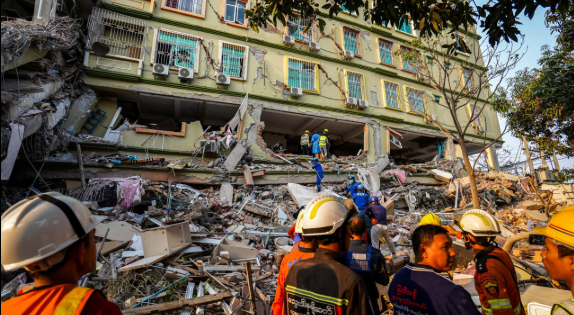
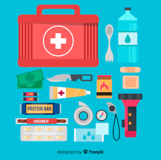

Prepara, actúa y recupérate de manera segura antes, durante y después de
un terremoto.
Que es un terremoto?
Un terremoto, también llamado sismo o seísmo en España, temblor de tierra o movimiento telúrico, es la sacudida brusca y pasajera de la corteza terrestre. Los más comunes se producen por actividad de fallas geológicas.
El constante movimiento entre las placas tectónicas produce fricciones y deformaciones que acumulan enormes esfuerzos, cuando esa energía supera el límite elástico de las rocas se produce la fractura de éstas en forma súbita y violenta.

Antes del Terremoto

La preparación es clave para minimizar riesgos durante un terremoto.
Sigue estos consejos:
Prepara un kit de emergencia con agua, alimentos no perecederos,
linterna, radio y botiquín de primeros auxilios.
Fija muebles, estanterías y electrodomésticos pesados a la pared
para evitar que se caigan.
Identifica áreas seguras en tu hogar, como bajo mesas resistentes o
junto a muros internos.
Realiza simulacros de evacuación con tu familia y enseña a todos qué
hacer en caso de emergencia.